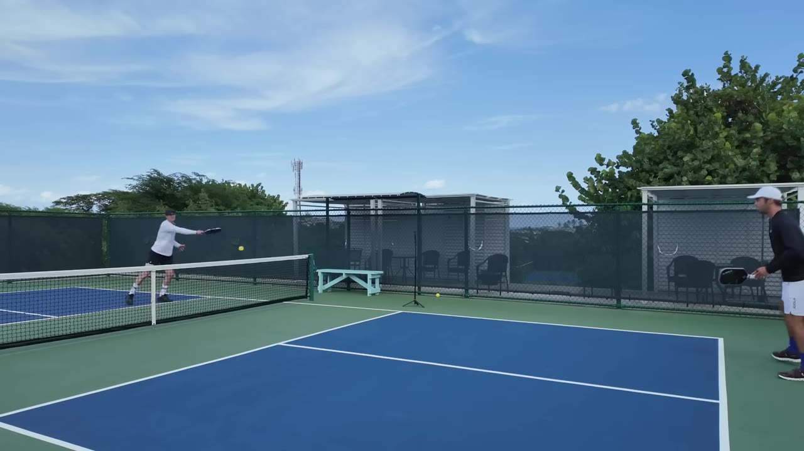
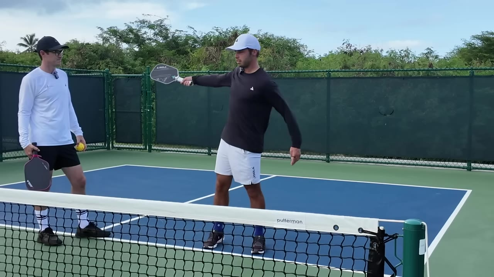
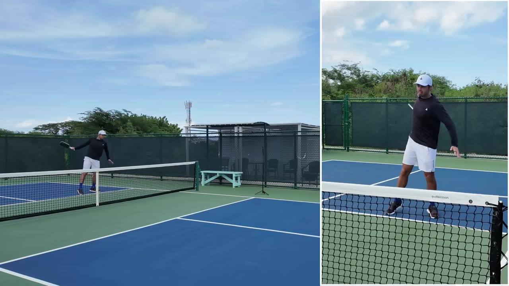
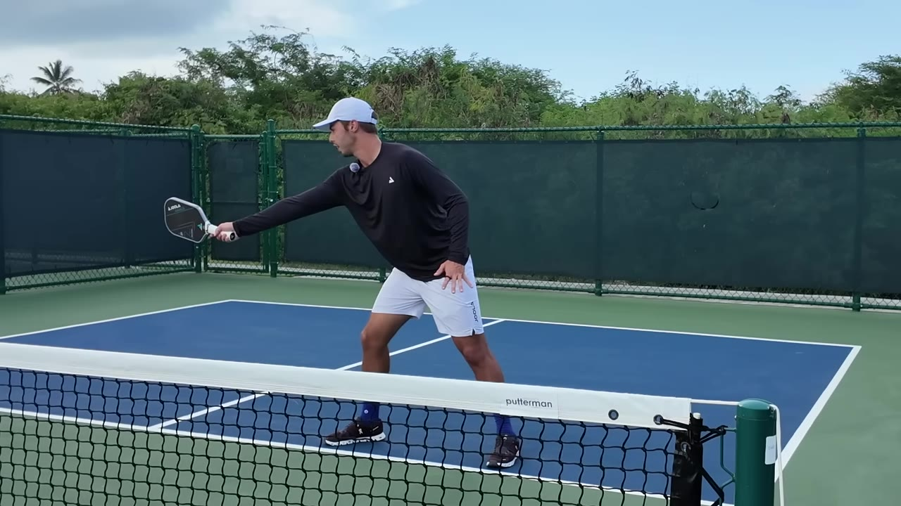

The 4th Shot Has More Options Than You Think
Josh brings in Ben to fix his 4th shot — what starts as "one tip" explodes into a masterclass on contact points, spin, and reading opponents.
Watch on YouTubeTL;DR
- The 4th shot is one of the easiest improvements that unlocks free points
- Keep your paddle horizontal and swing up for consistent backhand roll
- Close the face and whip up on shoulder-height balls instead of going flat
- Contact the ball out in front, not at your side — it changes everything
- If opponents can't score against you, you have all the time to set up your own scoring
01 · The contact zone
Backhand roll basics
The 4th shot is "one of the easiest things you can improve." Most people just focus on hitting hard. Ben starts with the foundation: where you contact the ball.

When hitting a backhand roll, keep the paddle horizontal and go up from there. Dropping the paddle head only works as a flick motion from above net level; from below, it's hard to time. With a Continental grip (most common), the contact point naturally drifts to the side of your body — that shrinks your margin. You want full extension out in front, not at your hip.
02 · The in-between ball
The Chariot Whip
There's a zone that's too high for a drop but not quite an overhead. Most people just hit flat through it — scared to miss.

Close the paddle face, swing up on the ball, and finish across your body instead of over your left shoulder. Tyson "Duck" Wagner's signature shot — you get pace and spin that "will never go out." As a righty, the side spin carries it to the right.
I got it from Tyson initially. It's one of his best shots.— Ben
03 · Shoulder-height backhands
Rotate, don't flick
Fast balls at shoulder height or above on the backhand side — not fast enough for a forehand, but too high to drop. People try to generate power with their wrist. Wrists just don't work that way.

The answer: rotate from the hips and shoulders, keep the paddle head horizontal, then turn the wrist face down at the last moment. You're loading like a spring — full rotational unloading. It feels weird because it's not intuitive, but the power is real.
When you turn your wrist down enough, it'll always go in. You have free license to completely unload.— Ben
04 · The forehand power shot
Body position is everything
When you have the space to go back and set up, the forehand power shot is devastating — but only if your body position is right.

Go back as far as your back points, fully rotate, and snap. Placement comes from where you contact the ball — out here for a cross-court shot, out here for line — not from changing your swing path. Most people just focus on hitting it hard. That works until it doesn't.
05 · Reading the net
Adjust mid-rally
The 4th shot isn't just mechanics — it's reading what your opponent is doing. How fast are they closing? Hesitant about coming in? Sprinting to the line?

If you contact the ball far out to the side, you can see with your left side where your opponent is — that tells you what to do with the ball. Fast approach? Take some juice off, drive it at their feet. Hesitant? Free license to pick your spot. The 4th shot is tough because of the decision-making, but mechanically, no single option is hard.